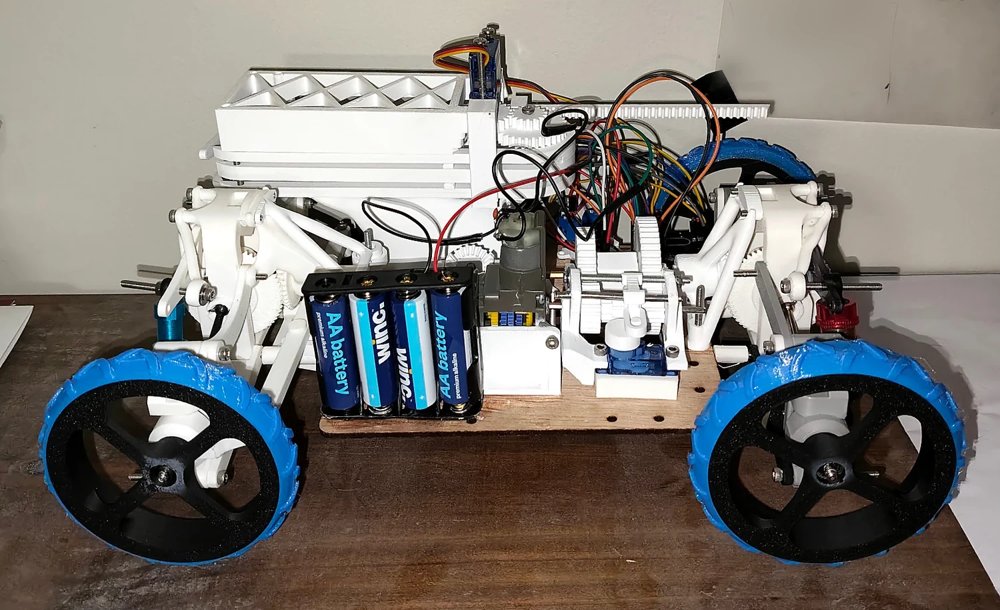
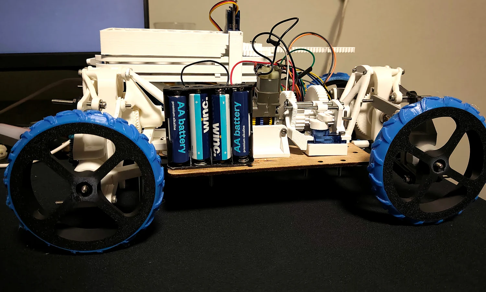
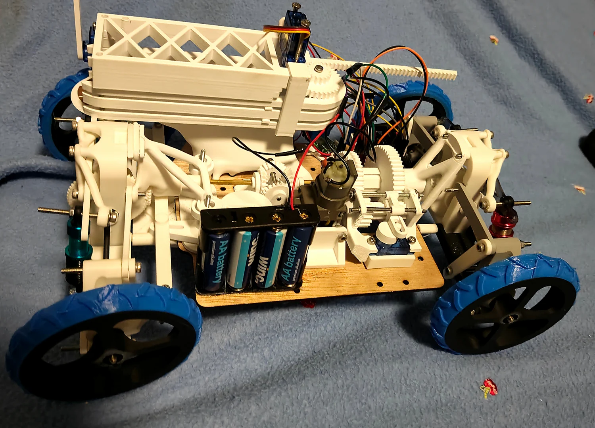
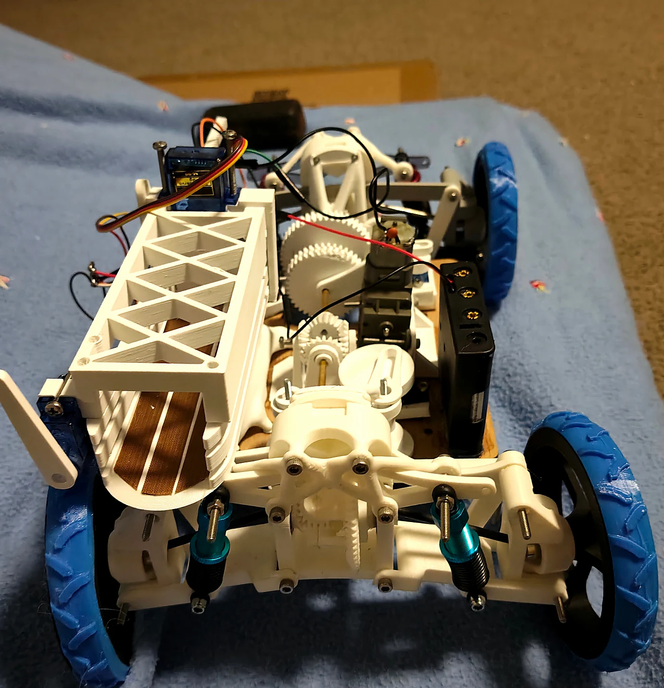
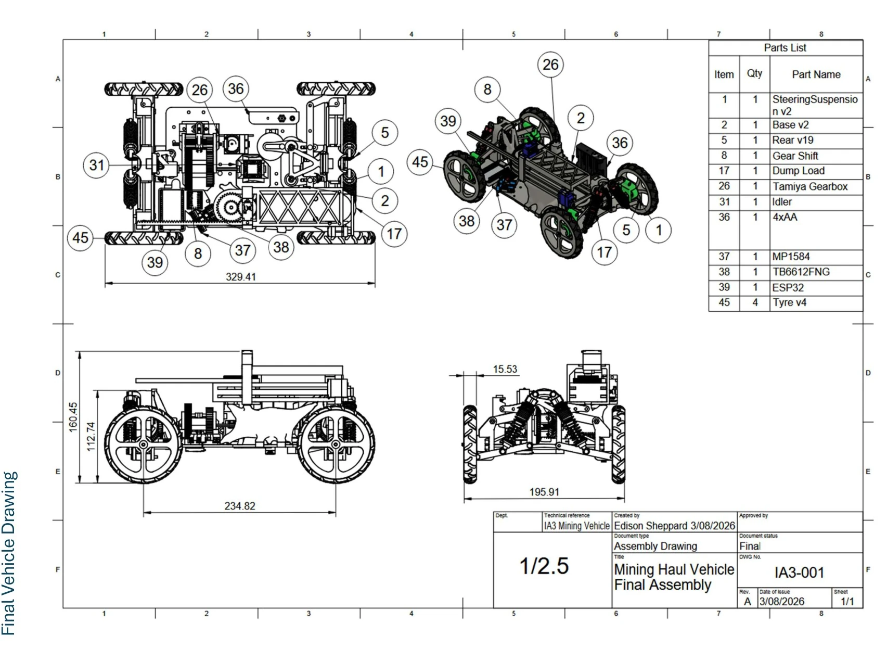
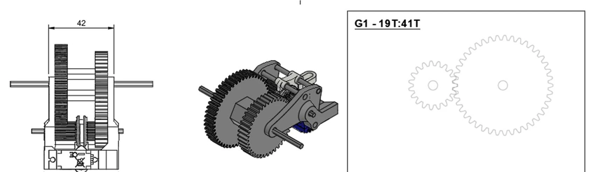
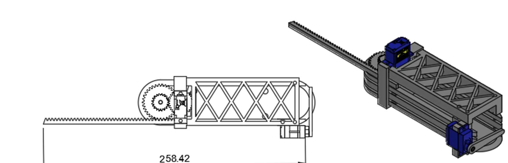
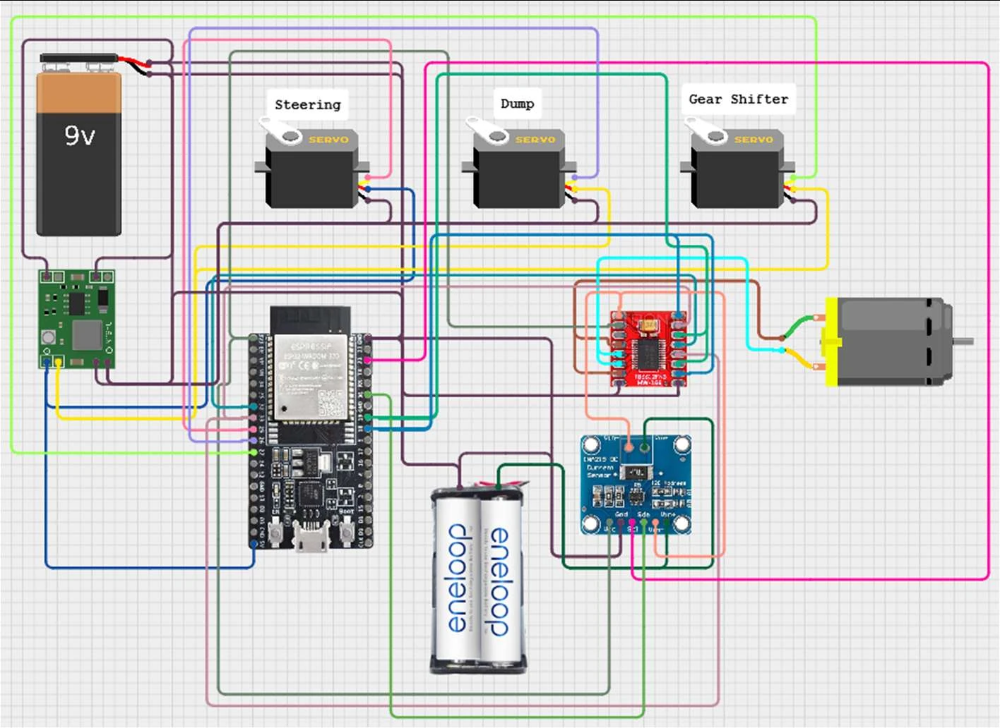

Transmission
A servo-driven scotch-yoke shifts a dog clutch between two ratio paths. The report lists total drive ratios of 372.2:1 and 1035.0:1.
A 1:20-scale mining-haul prototype designed to cross rough terrain and unload a payload, with four-wheel drive, independent suspension and a servo-shifted two-speed gearbox.

The school engineering brief required a 1:20 mining haul vehicle to traverse 20 mm obstacles, a valley and 30° inclines before depositing its load. Constraints included a single 6 V drive motor, four AA batteries and a limited sheet of 3 mm chassis material.
Three layouts were evaluated. The selected design scored 38 in the weighted decision matrix, ahead of alternatives scoring 23 and 22. It combined four-wheel drive, independent suspension, Ackermann-style steering, a two-speed gearbox and servo-driven unloading.
The main trade-off was added mechanical mass and complexity in exchange for terrain stability and load capacity. Physical tests eventually exceeded the payload target, while the mass and completion-time targets were not met.
The photographs below are from the original build. They have only been cropped and given basic brightness, contrast and sharpness adjustments; no mechanisms or components have been generated or replaced.



These are selected original CAD and electrical figures from the project report, reproduced without altering mechanical geometry. Select any figure to enlarge it.




A servo-driven scotch-yoke shifts a dog clutch between two ratio paths. The report lists total drive ratios of 372.2:1 and 1035.0:1.
A servo-driven rack and pinion pushes the load out. The designed travel is 81 mm, with successful single-stroke unloading in the recorded tests.
An ESP32 hosts a local Wi-Fi interface for motor commands and telemetry; the wiring also covers steering, gear shifting and the dump servo.
| Payload | Full course | Outcome |
|---|---|---|
| 0 kg | 72.3 s | Completed |
| 1.00 kg | 92.0 s | Completed |
| 1.45 kg | 108.9 s | Completed |
| 1.55 kg | 116.4 s | Completed |
| 1.65 kg | — | Stalled on incline |
The design met 8 of its 10 success criteria, with no manual assistance, loss of load or failed gear change reported during completed trials. The 1.65 kg load stalled on the incline. The report identifies vehicle mass, insufficient clearance and the torque-heavy second ratio as areas for improvement.